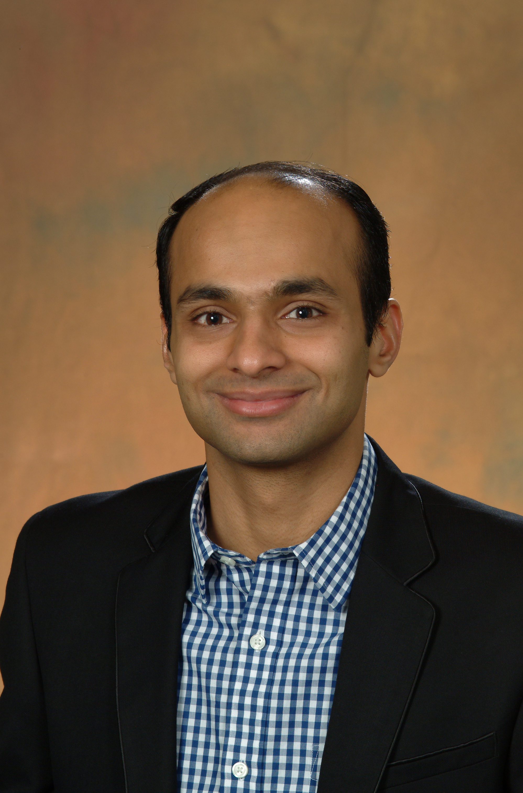

Bharadwaj Kadiyala
Salt Lake City, UT 84112
bkadiyala [at] eccles [dot] utah [dot] edu
I am an Assistant Professor of Operations and Information Systems at the David Eccles School of Business, University of Utah. My research examines the interplay between learning and economic incentives through an operational lens, with applications across traditional supply chains and content platforms.
Before joining Utah, I completed my PhD at the Naveen Jindal School of Management, University of Texas at Dallas, and served as an Assistant Professor at the Hong Kong University of Science and Technology from 2017 to 2019.
News
- 2026 "A System for Dynamically Tracking Content Moderation on Reddit" published in the Proceedings of ACL 2026 (System Demonstrations).
- 2026 Presenting "Content Moderation Under Competition" at the 2026 RMP Conference, Ann Arbor.
- 2025 "Learning from Consideration Sets" invited for presentation at the 2025 MSOM Conference.
- 2024 "Dual Value of Delayed Incentives" published in Manufacturing & Service Operations Management.
- 2024 "Social Learning and Content Quality Under Polarization" published in Manufacturing & Service Operations Management.
- 2023 First Place, INFORMS Service Science Best Cluster Paper Competition.
Research
My current work on content platforms studies how user incentives shape the consumption and generation of content, the role platforms play in information dissemination, and content moderation. Earlier work investigates learning and incentive problems in inventory management and retail operations.
Publications
Working Papers & Under Revision
Teaching
I currently teach analytical decision models (introductory operations research) and statistics and predictive analytics in the Master of Science in Business Analytics (MSBA) program at the David Eccles School of Business.
Service
Editorial & Refereeing
Referee: Management Science, Manufacturing & Service Operations Management, Operations Research, Production and Operations Management, Naval Research Logistics, MSOM SiG.
Conference Roles
- Session chair, INFORMS Annual Meeting (2019–2024)
- Session chair, POMS Annual Conference (2019, 2020)
- Session chair, 15th Utah Winter Operations Conference (2022)
- Session chair, INFORMS International Conference (2018)
- Organizing committee (Academic), MSOM Conference, Dallas (2018)
Paper Competition Judging
- INFORMS BOM Best Working Paper Competition (2023)
- MSOM Student Paper Competition (2018)
- POMS-HK Student Paper Competition (2018)
Memberships
INFORMS · MSOM · POMS · Phi Kappa Phi